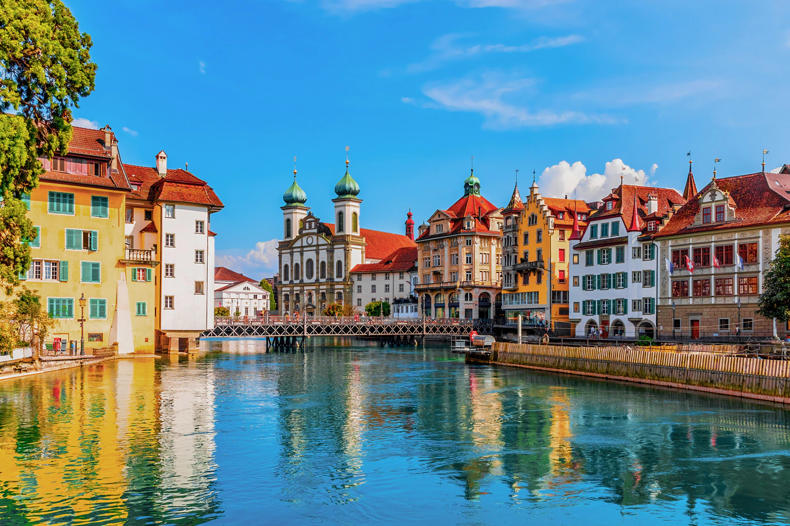
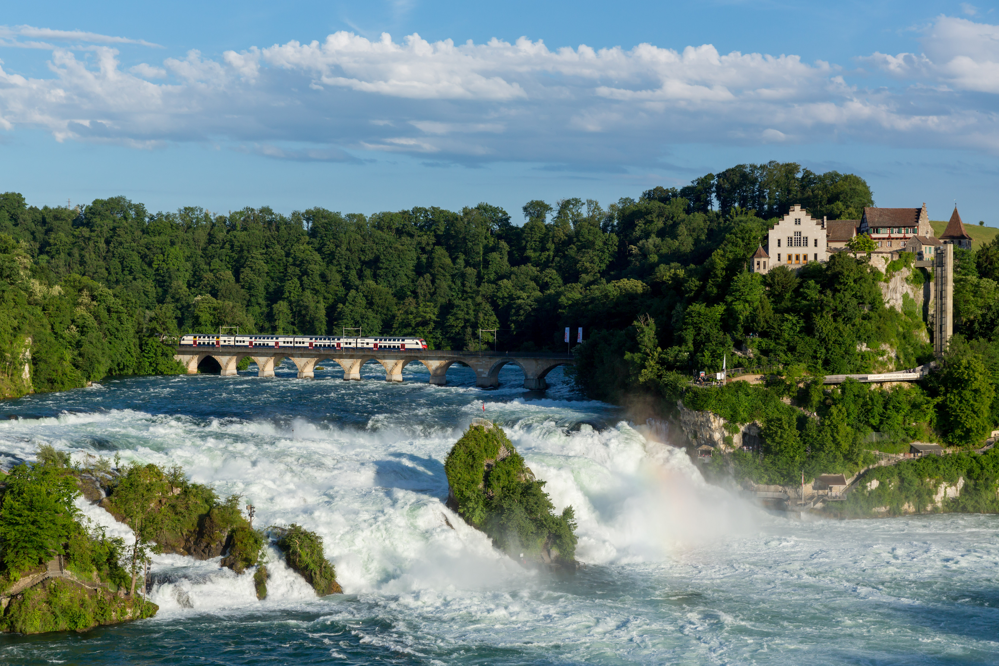
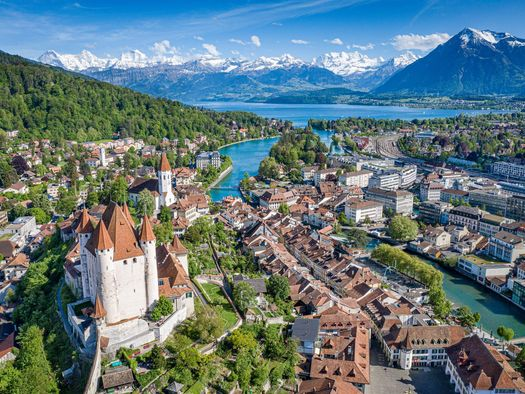
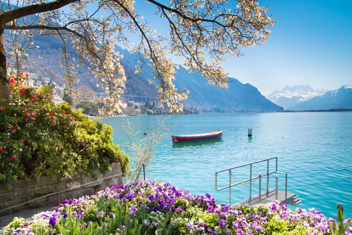
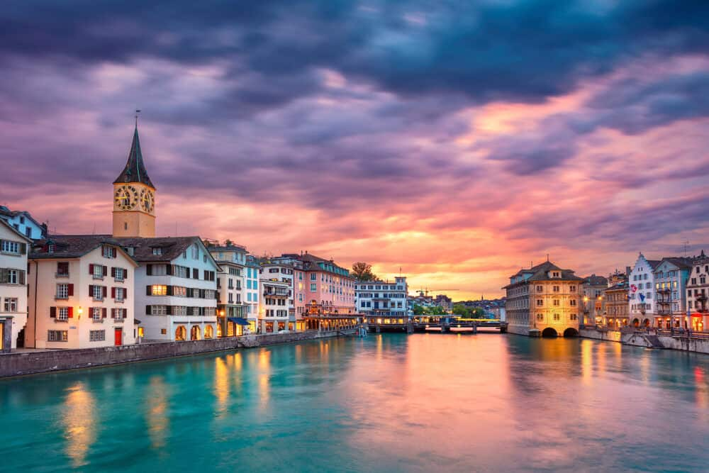

It hosts music festivals and concerts like a few in the world. From Archaeology to history and entertainment to infotainment, Lucerne is a complete package.
It is the largest falls in Central Europe. It span over 150 meters at Schaffhausen.
Interlaken rests between Lake Thun to the west and Lake Brienz to the east.This beautiful city boasts of flower gardens, hotels, and cafés in the middle of the town.
Europe's largest Alpine lake - Lake Geneva lies on the Swiss/French border. It lies between snow-capped peaks with promenades, parks, and gardens that surround the lake.
This name among the Switzerland tourist attractions boasts of a rich lineup of cultural treasures like quaint heritage shops, galleries, cafes, and colorful streets.
